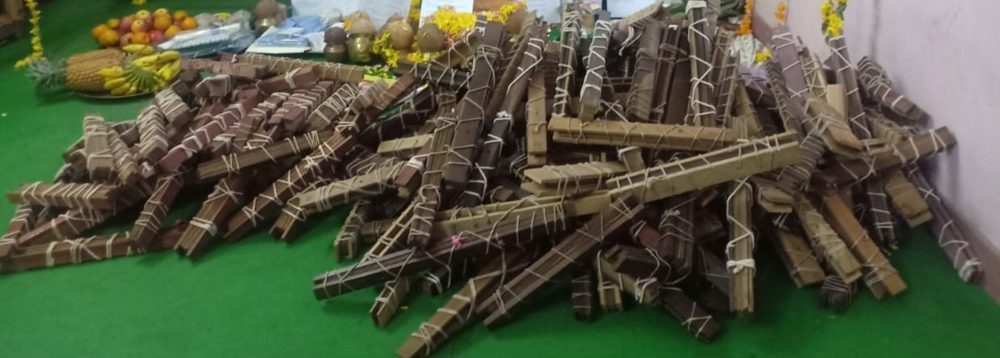
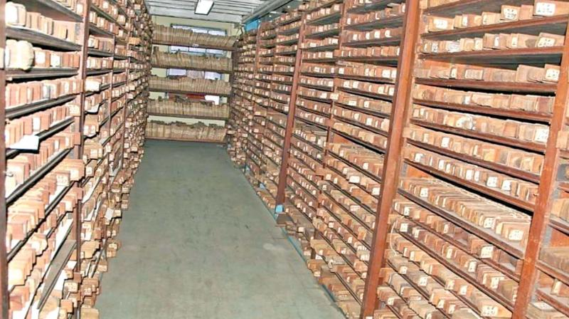
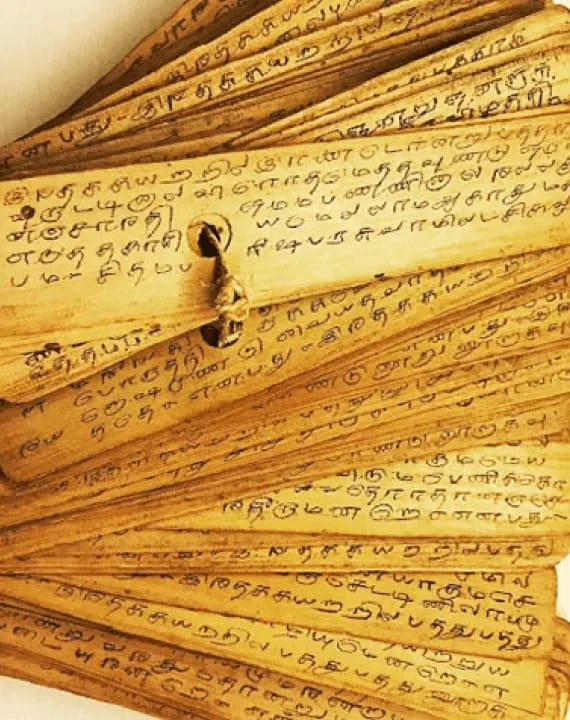
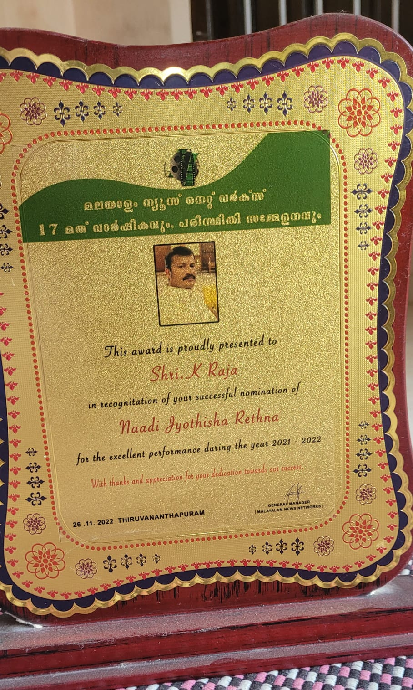

Agastya Nadi Tradition





Vaishnav Bhawan - Illuminating Your Path Through Ancient Wisdom
Naadi Readers • 4th Generation
For over two decades, I have been privileged to read the sacred Nadi leaves that reveal the divine blueprints written by Sage Agasthiyar thousands of years ago. As a 4th generation Nadi reader from the renowned Vaitheeswarankoil tradition, I carry forward the ancient wisdom passed down through my lineage.
Each Nadi consultation is a sacred journey where your thumbprint leads us to the precise palm leaf that contains your life's story. Through the cryptic verses inscribed in ancient Tamil, we unveil the past you've lived, the present you're experiencing, and the destined future awaiting you. This isn't prediction based on planetary calculations alone—it's the direct revelation of what the enlightened sages foresaw about your unique soul journey.
My role is to serve as a humble bridge between you and the divine wisdom preserved on these ancient leaves. With deep reverence for this sacred science and compassionate understanding of modern life's complexities, I help you discover the remedies and guidance specifically prescribed for your karmic path, ensuring ancient solutions address your contemporary challenges.
Among the various systems of astrology practiced worldwide, Nadi Astrology stands out as one of the most logical and scientific approaches. This ancient system, deeply rooted in Hindu tradition, was practiced by legendary sages like Agastya and Bhrigu thousands of years ago.
Unlike conventional astrology that relies primarily on zodiac signs and planetary positions, Nadi Astrology employs a sophisticated framework that includes Nakshatras (lunar mansions), sub-lords (subdivisions of Nakshatras), Vimshottari Dasha (planetary periods), and planetary transits to deliver remarkably precise predictions.
The term "Nadi" refers to minute divisions within each zodiac sign. Each sign is divided into 150 Nadis, creating a total of 1,800 Nadis across the entire zodiac wheel. These divisions allow for incredibly detailed and personalized readings.
The names and numbering of these Nadis vary based on whether the sign is movable (Chara), fixed (Sthira), or dual (Dvisvabhava), adding another layer of complexity and precision to this ancient science.
The foundation of Nadi Astrology begins with preparing your horoscope, which includes the Lagna (ascendant) chart and Bhava Chalit chart, calculated using your precise date, time, and place of birth.
What makes this system exceptional is its consideration of house combinations, paired with the Vimshottari Dasha system and planetary transits for timing events. This multi-layered approach provides significantly higher accuracy in predictions compared to other astrological methods.
Saint Agasthiyar (also known as Agastya) is revered across multiple religions and spiritual traditions. According to ancient mythology, he was born from a pot (Kumbha) created by the Devas to overcome the Asuras who had grown powerful through penance.
Legend speaks of his profound connection to South India, where he released the sacred Cauvery River from his kamandalu (water pot) to provide water to the people. His divine wisdom and extraordinary powers form the very foundation of Nadi astrology as we know it today.
Nadi astrology traces its origins back approximately 5,000 years, making it one of humanity's oldest predictive sciences. The ancient sages, blessed with the divine ability to perceive both past and future, inscribed their visions onto palm leaves using ancient Tamil script.
These precious palm-leaf manuscripts have been preserved through generations. Today, only a select few expert readers possess the knowledge and training required to interpret these ancient texts and reveal the destinies recorded within them.
The word "Nadi" literally means "in search of," referring to the seeker's quest for predictions about their life journey. These predictions are contained within palm leaves (Nadis) that were scattered across various locations and written in ancient Tamil script.
Various types of palm-leaf collections exist, each named after different sages and traditions. Some well-known varieties include:
Nadi astrology predictions are deeply connected to the precise placement of planets in your birth chart, your birth Nakshatra (lunar mansion), the effects of your Lagna (ascendant), and the influence of various planetary Dashas (time periods).
This system differs significantly from other Hindu astrological methods in its approach and methodology, offering unique insights that complement and often exceed the detail provided by traditional Vedic astrology practices.
Two decades of mastery in Vedic astrology and spiritual guidance.
Precise readings backed by rigorous study and intuitive insight.
Your privacy is sacred. All consultations remain completely confidential.
Every reading is uniquely tailored to your individual cosmic blueprint.
Take your thumb print photo (or) thumb print on white paper
Ready to discover what the stars reveal about your path? Connect with me for a personalized consultation.
Anavathukkal Temple, Bharathiyar Road, MAHE (Kannur), Kerala - 673 310
Your destiny awaits. Let the cosmos guide your decisions.